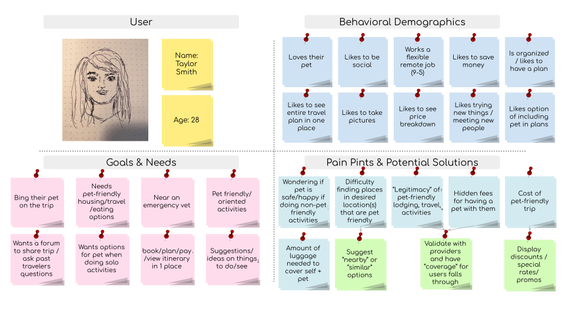

RESEARCH OBJECTIVE
The goal of this study is to understand participant’s processes of planning a trip. More specifically, discover their past experiences traveling with pets and how they negotiate their plans to consider their pets
PROTO-PERSONA
To kick off the user research, I started by creating a proto-persona to help me identify all possible personas to target. While the proto-personas are not research based, they're a great place to start to help align stakeholders.
USER INTERVIEWS
Before I could start interviewing people, I had to develop an interview plan. This plan organized the basic structure of the interview including the specific questions to ask in order to obtain qualitative data. I also created a Google Forms survey in order to obtain quantitative data.

USER INSIGHTS
I conducted 5 user interviews and recieved 13 responses to the Google Forms survey. With this data collected, I then created an Affinity Diagram, Empathy Map, and User Persona
Affinity Diagram

Emapthy Map

User Persona